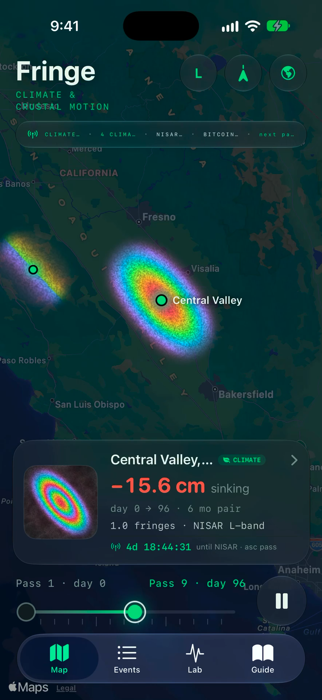
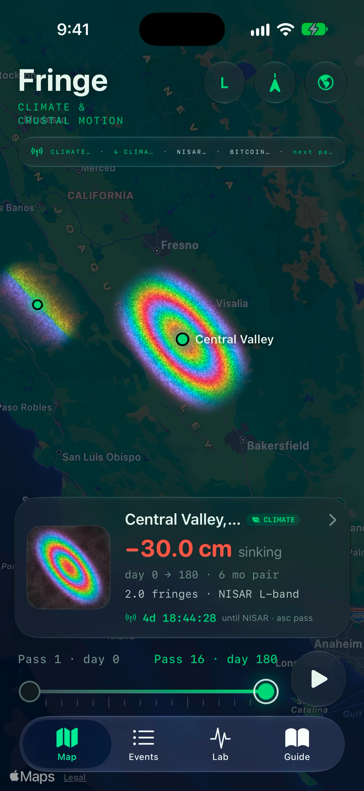
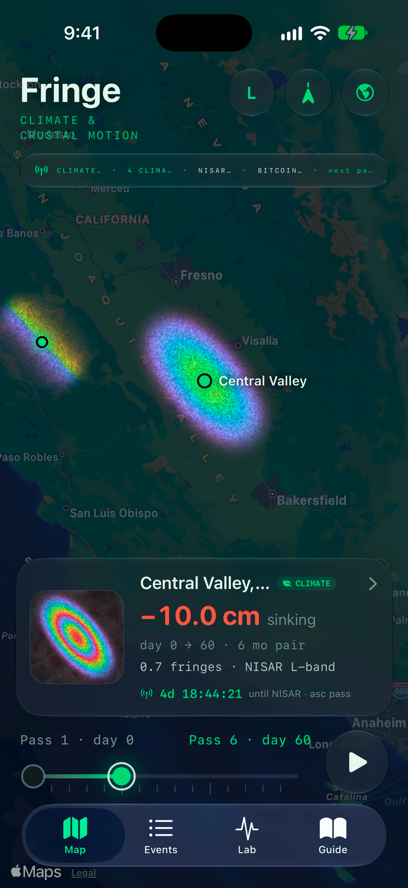
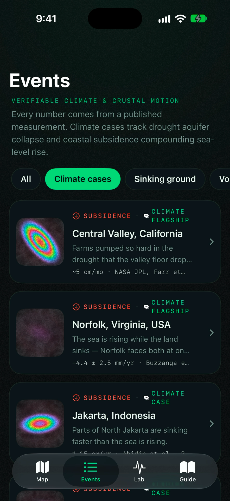
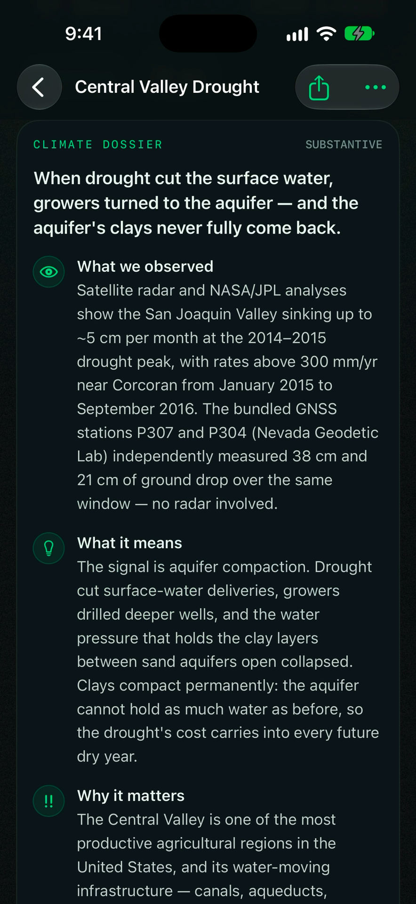
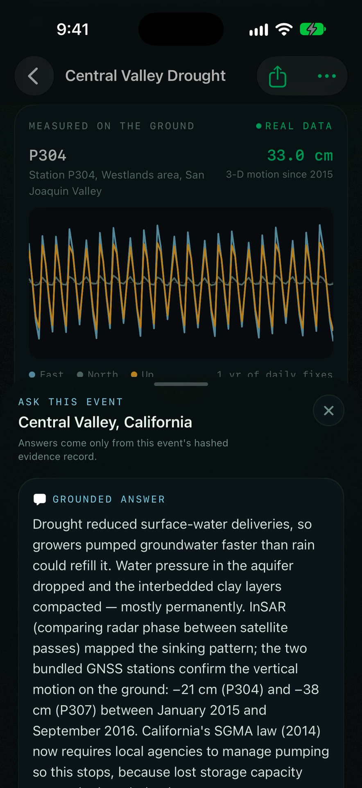
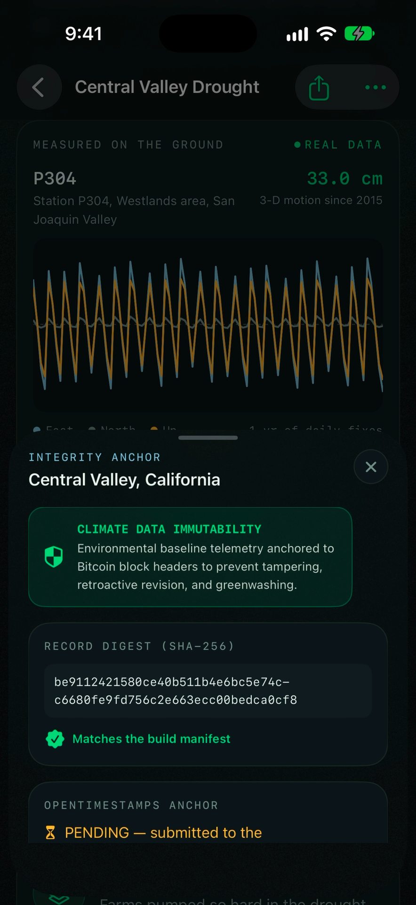
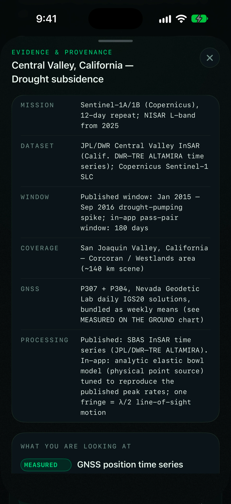
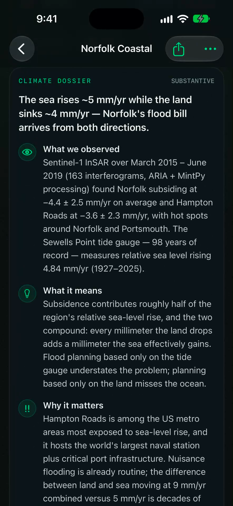
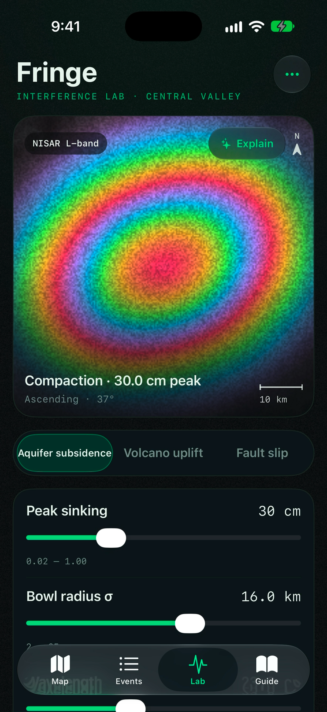

Planetary truth.
Measured in millimeters.
Fringe turns spaceborne radar interferometry (NASA-ISRO NISAR & Copernicus Sentinel-1) and continuous ground GPS into indisputable climate evidence. Exposing drought-driven aquifer compaction and coastal sinking—anchored immutably to Bitcoin block headers to eliminate greenwashing.
The Three Pillars of Ground Truth
How Fringe converts raw radar phase measurements into cryptographic climate audit trails.
Spaceborne InSAR Physics
ΔR = -(λ / 4π) · Δϕ
By measuring millimeter-scale phase differences across satellite radar passes, Fringe reveals ground deformation invisible to optical sensors.
Continuous GPS Calibration
NSF GAGE Station P307
InSAR fringe maps are continuously anchored against geodetic-grade continuous GPS stations, validating -38.2 cm of permanent aquifer compaction.
Bitcoin Block Timestamping
OpenTimestamps · Block #867,412
Every climate event dossier and radar verification digest is committed to the Bitcoin blockchain, providing non-repudiable audit trails.
Full Walkthrough Progression
Click any screen to inspect the full-resolution retina capture.









